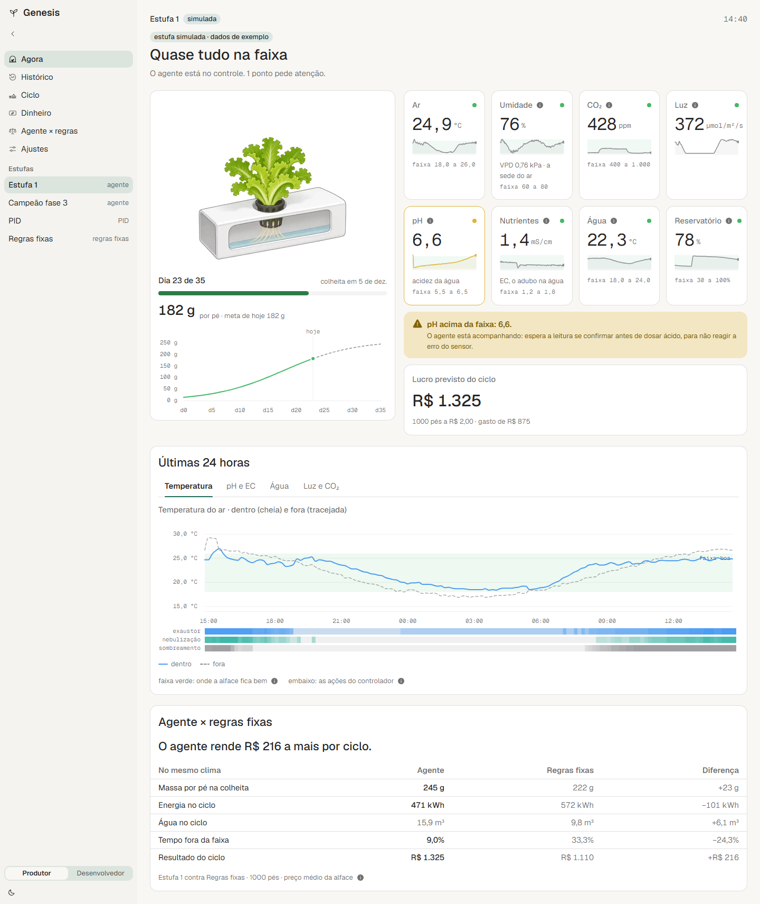
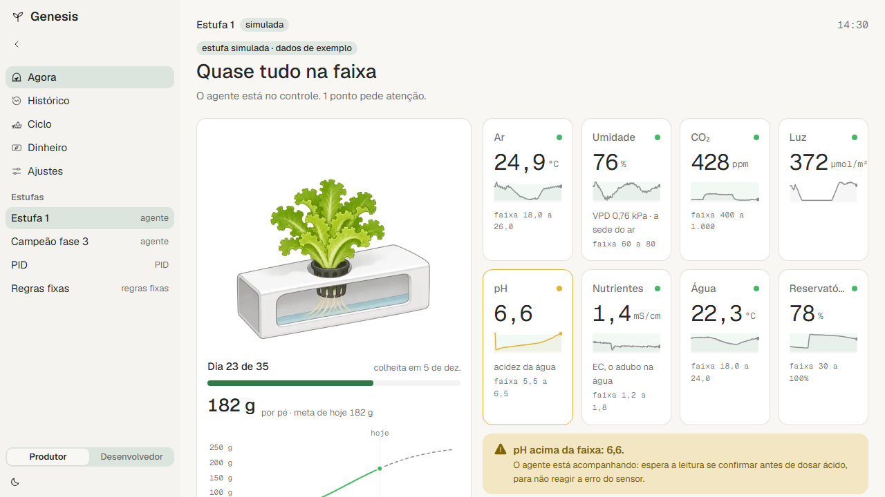
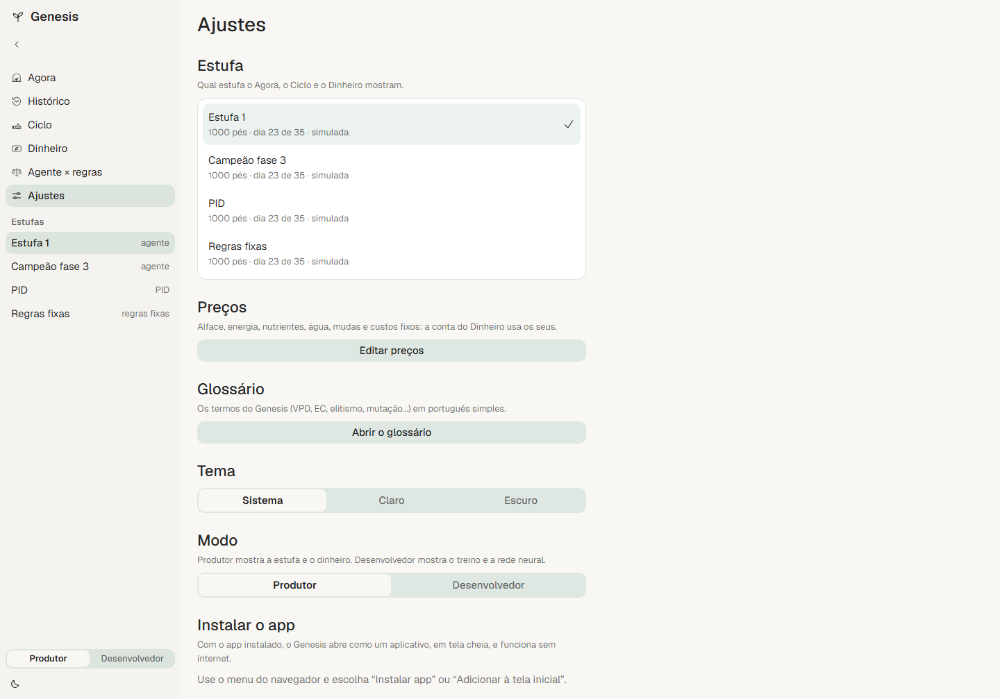
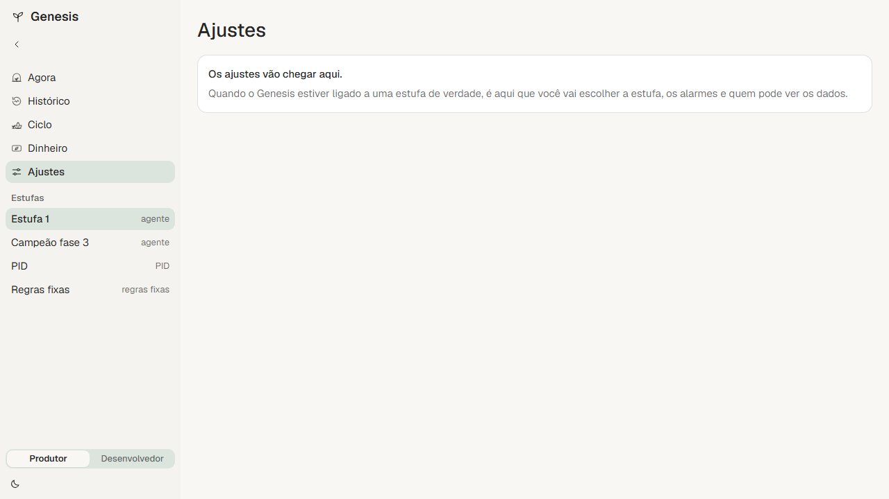
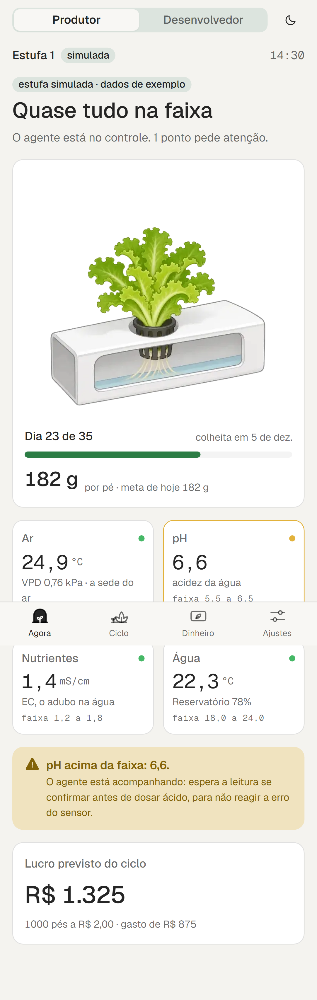

Limpeza: só o que existe de verdade
Primeira das sete fases da rodada "dashboard só com dado real". Saíram os "?", o Glossário, o Currículo, o "Ele esqueceu algo?", as perturbações, a página Agente × regras do Produtor e o simulador de brinquedo. Ajustes virou uma página simples, o foco voltou a ser o do navegador e as grades passaram a ocupar a largura toda. Saldo: 74 arquivos mexidos, 2.995 linhas a menos e 170 a mais.
Antes e depois





Todas as capturas deste passo (tema claro, desktop e celular, todas as rotas): docs/revisao-visual/passo-08/.
O que saiu e por quê
Tudo o que sai nesta lista foi decisão do Gabriel (pedido de 25/11/2026). O critério dele: a tela mostra o que existe e funciona hoje; o que é explicação vai para a apresentação, e o que é futuro não aparece.
| Item | Onde estava | Por que saiu |
|---|---|---|
Os "?" (OQueEIsso, InfoTip) e o módulo glossario com a página /glossario | cards, gráficos, Treino, Modelo, Dinheiro | Poluíam a tela. A explicação de cada termo fica nestas páginas de passo e na apresentação. |
Bloco "Currículo" e curriculo.ts | Treino | O treino só tem a fase 1. Mostrar 6 fases, 5 delas vazias, é mostrar o futuro. |
| "Ele esqueceu algo?" | Treino | Depende de várias fases treinadas. Hoje não tem o que medir. |
| "Injetar perturbação", "Como lidou com cada perturbação", botões "Escolher o clima" e "+ Estufa" | Estufas lado a lado, Modelo | Só funcionavam no simulador de brinquedo, que saiu, ou eram promessa ("chega com o simulador do backend"). |
Página Agente × regras do Produtor (e ComparacaoAgenteRegras) | barra do Produtor, Agora, Dinheiro | O produtor não sabe o que é "agente" nem "regras fixas". A comparação continua no modo Desenvolvedor (Estufas lado a lado). |
Simulador de brinquedo (infrastructure/simuladorBrinquedo/, 8 arquivos) | npm run dev | Inventava números (só simulava a temperatura e preenchia o resto com valor de exemplo). A estufa do Produtor vai passar a reproduzir uma gravação real do treino (passo 10). |
| Fase 6 do resumo do celular ("fase 1 de 6") e "Mistura de fases" na configuração | Desenvolvedor | Restos do currículo. |
Decisões deste passo
O Gabriel tirou "modo" de Ajustes. No desktop o seletor já estava no rodapé da barra lateral, mas no celular Ajustes era o único lugar para trocar de modo. Sem ele, o celular ficaria preso no Produtor. Pus o seletor no topo de cada página, à esquerda do sol/lua, onde já havia uma faixa livre. A casca do celular (CascaCelular) ganhou um espaço topo, que o app preenche: a casca continua sem saber o que é "modo". Alternativa descartada: uma aba a mais na barra de baixo, que já tem 4 abas e ficaria apertada.
A regra do Gabriel permitia manter o "instalar app" só no celular. Mantive, porque o app em tela cheia no celular é o jeito de mostrar o Visor e o Agora na apresentação. No desktop, Ajustes mostra só o aviso.
O anel verde e arredondado vinha dos tokens do Astryx (--focus-outline-color no verde-pinho, estilo solid, afastado 3 px). Troquei os tokens no tema (genesisTheme.ts → npm run tema): estilo auto (o contorno nativo), cor -webkit-focus-ring-color (a do Chrome e do Safari) e afastamento 0. Mudar pelo tema, e não com CSS solto em cada componente, é a regra do Astryx (dashboard/AGENTS.md), e pega todos os componentes de uma vez. O foco continua visível: só mudou de cara. A barra de abas do celular, que é nossa, usa os mesmos tokens.
A causa do espaço vazio à direita era uma só, em vários lugares: grades com auto-fill (o navegador cria todas as colunas que cabem, mesmo vazias). Exemplo: 4 números com largura mínima de 160 px numa área de 1.100 px viram 6 colunas, 2 vazias à direita. Com auto-fit as colunas vazias somem e as cheias esticam. No Astryx é columns={{ minWidth, repeat: 'fit' }}; nos CSS das Gravações e das Estufas lado a lado, repeat(auto-fit, …). Ajustes perdeu a largura máxima de 560 px.
Sem o simulador de brinquedo, o npm run dev passa a mostrar a estufa dos dados de exemplo (estufas.json), com o selo "dados de exemplo" à vista. É provisório: o arquivo é inventado e sai no passo 10, quando a estufa passa a reproduzir uma gravação real. Fazer as duas coisas de uma vez deixaria este passo grande demais para conferir.
Números
| O que | Valor | Fonte |
|---|---|---|
| Arquivos mexidos | 74 | git diff --shortstat do commit |
| Linhas apagadas / acrescentadas | 2.995 / 170 | idem (inclui as capturas novas como arquivos) |
| Testes unitários | 81 passando (12 arquivos) | npm test; saíram os testes do glossário, do currículo e do simulador |
| Testes e2e | 25 passando, 21 pulados (capturas e testes só de desktop rodando no celular) | npm run e2e |
O que deu errado ou surpreendeu
A captura da rota "/" virou uma pasta. No Git Bash, o texto / numa variável de ambiente é convertido num caminho do Windows (C:/Program Files/Git/) antes de chegar ao Node. A captura do Agora saiu num lugar estranho. Correção: rodar com MSYS_NO_PATHCONV=1, agora anotado no próprio capturas.spec.ts.
O tour do Desenvolvedor tampava as capturas. O diálogo de boas-vindas aparece na primeira visita e saía em cima da página. As capturas agora marcam o tour como visto antes de abrir a página.
O que ainda falta e ficou anotado para os próximos passos: a barra lateral do Produtor ainda lista as estufas com o rótulo "agente", e a frase do Agora diz "O agente está no controle". As duas saem no passo 10, junto com a troca da fonte de dados.
Como reproduzir
cd dashboard
npm run typecheck && npm run lint && npm run format:check
npm test
npm run e2e
MSYS_NO_PATHCONV=1 CAPTURAS=passo-08 ROTAS="/,/historico,/ciclo,/dinheiro,/ajustes,/dev,/dev/treino,/dev/modelo,/dev/gravacoes" npx playwright test capturas -g lightEm aberto
- Passo 09: o treino grava também as regras fixas e "sem controle" no clima da gravação, e as métricas por geração.
- Passo 10: a estufa do Produtor reproduz uma gravação real (sai o
estufas.jsoninventado e o rótulo "agente" da barra). vantagemDoAgenteemdinheiro/domain/contas.tsficou sem uso na tela; sai com a repaginação do Dinheiro (passo 11).
Links
- Pedido e regras:
CLAUDE.md,.claude/rules/documentar-cada-passo.md. - Rodada visual anterior: passo 07 e decisão 0006.
- Arquivos:
dashboard/src/app/PaginaAjustes.tsx,dashboard/src/shared/design-system/templates/CascaCelular.tsx,dashboard/src/shared/design-system/tema/genesisTheme.ts,dashboard/e2e/moldura.spec.ts.